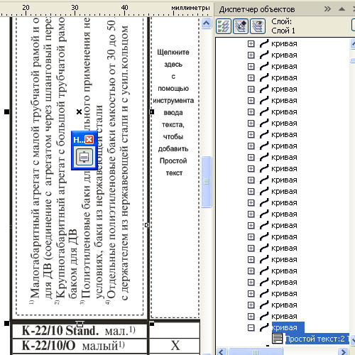
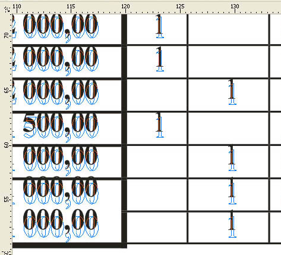

Таблицы из Word в CorelDRAW
Вставка таблицы из Word-а не представляет никаких трудностей до той лишь поры, пока таблица не слишком сложная (имеющая ячейки с вертикальным текстом,или комбинированная из слепленных вплотную двух или более таблиц).
Простая таблица в Word-е выделяется целиком, копируется в буфер обмена и вставляется в документ.cdr, при условии, что ничего не выделено. Вставится она как связанный объект (OLE-объект) целиком, как есть. Удобны такие объекты тем, что они могут редактироваться (для этого надо выделить объект правой кнопкой мыши и выбрать в открывшемся меню Объект – Изменить, после редактирования щёлкнуть в любом месте документа.cdr). Также к достоинствам OLE-объектов можно отнести возможность их масштабирования как с сохранением пропорций, так и без, что может быть полезным при их подгонке, правда, сильно нарушать пропорции не стоит, так как шрифты, трансформированные без сохранения пропорций, будут выглядеть искажёнными. А некоторым недостатком OLE-объектов является то, что их нельзя поворачивать.
При попытке вставить сложные таблицы они «разваливаются, разъезжаются», вертикальный текст отказывается вставляться или сбивается.
Какие есть пути и варианты решения задачи?
Первый вариант – это вставить таблицу по частям, которые будут представлять те же OLE–объекты, которые можно скомбинировать в единую таблицу.
На рисунке ниже показан пример разбиения таблицы на части:
1 часть – шапка таблицы;
2 часть – серединная с ячейками с вертикальным текстом;
3 часть – нижние строки таблицы.

Бывает недостаточно выделить группу ячеек таблицы, которые мы собираемся скопировать и вставить (после вставки можно иногда наблюдать, как и они «разъезжаются». Помогает такой приём: удалите те строки таблицы, которые не будут копироваться.
В приведённом примере таким способом были вставлены 1-ая и 3-я части таблицы.
Со средней частью таблицы, содержащей вертикальный текст можно поступить следующим образом: скопировать в буфер обмена и вставить в Adobe Illustrator, который также не справляется со сложными таблицами, но хотя бы справляется с вертикальным текстом. После сохранения файла.Ai открыть его с помощью CorelDRAW. Правда, эта часть таблицы будет вставлена как группа объектов
Как уже отмечено, OLE-объекты нельзя поворачивать.. Если всё же есть необходимость таблицу повернуть, то можно файл сохранить как .pdf., затем открыть с помощью CorelDRAW, всё будет в виде группы объектов.
Второй вариант более сложный и приемлем,если мы желаем иметь редактируемую таблицу, то есть с возможностью редактировать не только текст, но и сетку и заливку ячеек. К сожалению нет такого средства, чтобы каким-то волшебным образом это сделать быстро. Таблицу придётся воссоздать с применением некоторых приёмов, которые несколько облегчат задачу.
Для переноса в документ.cdr сетки таблицы можно воспользоваться таким приёмом: в Word-овском файле удалите весь текст и заливку ячеек. Сохраните как файл.pdf (такая возможность появляется после установки на компьютере программы Adobe Acrobat, не путайте с Adobe Reader). Откройте файл.pdf с помощью CorelDRAW, Если при открытии файла будет запрос, как отображать текст, установите «как кривые». Сетка таблицы будет состоять из отдельных отрезков, что в принципе не страшно, так как это не заметно.При желании все кривые можно объединить или сгруппировать.
Чтобы создать текстовые блоки в ячейках, последние должны представлять замкнутый контур, поэтому сначала создадим ячейки с помощью инструмента Интеллектуальная заливка. Чтобы контролировать создание прямоугольников-ячеек, лучше задать какой-нибудь цвет заливки, а в дальнейшем можно задать заливку без цвета.
Следующим этапом будет создание текстовых блоков в ячейках. Замечено, что инструмент Текст не хочет создавать рамку в ячейках, ширина которых меньше 13 мм. Поэтому на этом промежуточном этапе просто увеличим всю таблицу до такой величины, чтобы самые узкие ячейки стали шириной не менее 13 мм. Масштабируйте при мощи окошка масштаба на панели свойств,используйте значения кратные целым числам, например, для увеличения 500% и для уменьшения 20%.
Создавая текстовые рамки для ячеек с вертикальным текстом, лучше повернуть всю таблицу на –90°, иначе придётся в каждой рамке выполнять команду Вертикальный текст и вертикальное и горизонтальное отражение, чтобы строка шла не сверху-вниз а снизу- вверх.
Дальше наполняем текстовые блоки. Поочерёдно копируем тест одной из ячеек в исходном файле и вставляем в соответствующую ячейку таблицы в документ.cdr (при копировании следите, чтобы был выделен только текст, а не вся ячейка).

Для выравнивания текста по середине ячейки, вытащите кнопку соответствующей команды (Инструменты–Настройка–Команды–Показать все). Бывает так, что после применения команды выравнивания в ячейке текст не хочет выравниваться. Поставьте курсор в конец строки и удалите лишние служебные символы. Вставка текста в ячейки – процесс кропотливый, но зато в каждой ячейке можно легко редактировать содержимое.
Для самых узких строк (часть 3 таблицы в приведённом примере) не стоит создавать текстовые рамки в ячейках, в большинстве которых проставлено по одному символу (крестик или прочерк). Текстовое заполнение этой части таблицы можно также вставить целиком, как группу объектов. Для этого снова откройте исходную таблицу в Word, удалите все лишние строки таблицы и задайте цвет линий сетки и заливку без цвета, сохраните как файл.pdf, который затем импортируйте в документ.cdr.
Вставляя эту текстовую часть, может оказаться, что будет необходима некоторая подгонка. Поставьте группу так, чтобы верхняя строка попала на своё место. Если нижние строки не попали на своё место,масштабируйте всю группу в нужном направлении (см. рисунок ниже).

Если мы хотим таким же образом (скопом) вставить текст для части таблицы содержащей вертикальный текст, то для избежания сбивки текста после сохранения файла.pdf, лучше повернуть документ.pdf на -90° в программе Adobe Acrobat и снова сохранить, а после импорта в документ.cdr снова повернуть на 90°.
При необходимости можно редактировать отдельные элементы таких текстовых групп, понимая, что они не имеют привязки к ячейкам.
Третий вариант – это тяжёлый случай, когда нет ни Adobe Illustrator, ни Adobe Acrobat, и при этом мы хотим получить редактируемую таблицу. Даже если мы хотим отрисовать сетку таблицы, всё равно изображение сетки таблицы должно быть помещено в документ CorelDRAW, чтобы при отрисовке можно было повторить конфигурацию таблицы. Для этого в исходном файле.doc удалите весь текст и, если получится, то целиком, если не получится, то по частям копируйте сетку и вставляйте как OLE–объекты, составляйте из них общую конфигурацию.
Попробуйте такой способ отрисовки (стандартный способ с помощью инструмента Таблица в приведённом примере невозможно использовать, т.к. в третьей части таблицы содержались узкие строки высотой всего 3 мм, а инструментом Таблица можно сжимать строки до 4 мм.)
Создайте прямоугольник по внешней границе таблицы, преобразуйте его в кривые. Инструментом Форма обведите созданный прямоугольник чтобы выделить все точки, по одной из точек щёлкните правой кнопкой мыши и в открывшемся меню выбирете Разъединить. Затем инструментом Выделение выделите всё и выбирете Упорядочить – Разъединить, вместо прямоугольника получится четыре отрезка. Дблируйте (настройте предварительно смещение копии равным нулю) и перемещайте полученные отрезки по горизонтали или по вертикали, накрывая ими все линии сетки. Там, где есть объединённые ячейки, полученные отрезки соответственно укорачивайте.
Текстовое наполнение ячеек такое же, как и во втором варианте, но иногда можно обойтись и без создания текстовых блоков в ячейках, но это лишь при условии, что все строки (или группы строк) имеют одинаковую высоту, тогда текст можно копировать и переносить целыми колонками. Для этого в исходном файле выделите такую колонку (или ряд ячеек с вертикальным текстом) и объедините ячейки. Копируйте. Вставляйте колонку так, чтобы первая строка попала на своё место и, выбрав инструмент Форма (правка формы), тяните маркер вертикального перемещения, изменяя межстрочный интервал так, чтобы нижняя строка перенесённой колонки попала на своё место.
Специально для CDRPRO.RU


Напечатай глянцевый журнал из блокнота.
Sancho, не надо парадоксы тут приводить в пример.
просто не надо из пушки по воробьям стрелять, если просто тупо надо отпечатать книгу с таблицами, да еще и в чб, то не зачем это добро тащить в корел, из ворда все прекрасно распечатывается. конечно его потом надо будет подготовить в печать, но на это времени уйдет гораздо меньше чем изначально коряченье в кореле с ориентацией текста и прочей работы с таблицами.
PS: теоретически, и в блокноте можно глянец сделать, если писать на постскрипте :))) тока много писать придется :)))
Ну так ты же сказал "из чего угодно". Твои же слова, не мои! :)
будем холиварить?
я тебе привел контрпример, в блокноте можно написать на постскрипте.
вобще имелось ввиду что есть програма в которой удобно что-то делать, и если умеешь работать в ней или в ней что-то удобно реализовано, то в ней и надо работать, а не тратить время на борьбу с неизученой или неприспособленной к этому программой. а в печать подготовить уже готовое издание проще и быстрее в другой программе в которой это делается удобнее и известнее.
повторяю - я говорю про экономию времени при верстке/правке/дизайне
вобщем перекладывайте с больной головы на здоровую :) пускай верстальщик в типографии мудохается, не зря же вы ему деньги платите :)))
Да мне если честно всё равно кто в чём :) так, позадорить :)
П.С. лично я для верстки использую InDesign, а word и не стоит на компе вовсе. ТЗ я могу и в OpenOffice прочитать, а остальное в печку )))
Да, неплохо бы добавить возможность вертикальной ориентации текста в ячейках в следующих версиях CorelDraw. Иногда очень нужно...
Для этого используют команду вертикальный текст.
Только, к сожалению, текст идёт сверху вниз.
Возможно, снизу вверх появится в новых версиях.
Страницы